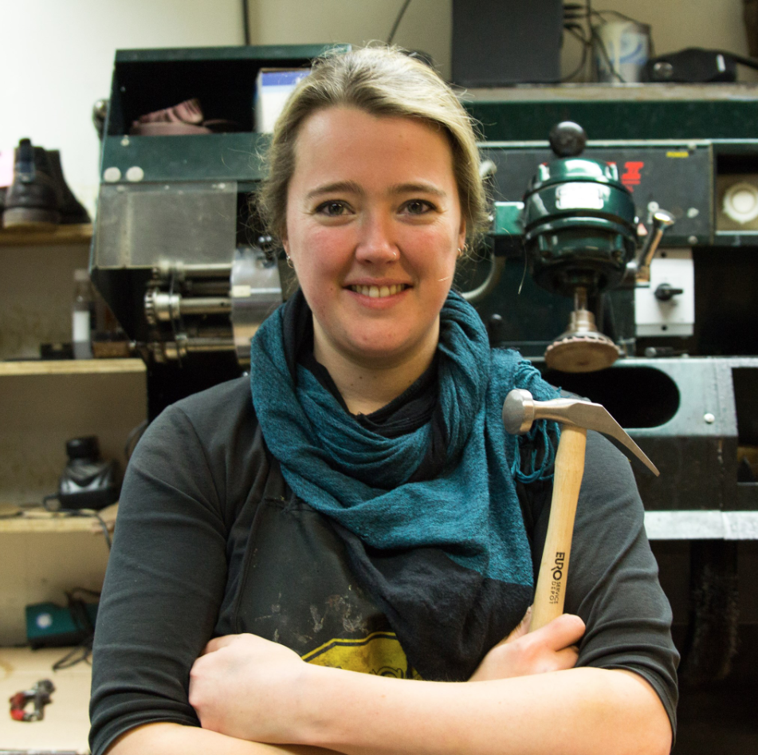

Welkom bij schoenmakerij de Leest
Nieuwstraat 26A, 4811 WV Breda
Zijn uw schoenen toe aan reparatie of heeft u een vraag over uw schoenen? Kom gerust langs en wij helpen je graag verder!
Openingstijden
| Dag | Open | Sluit |
|---|---|---|
| Ma | — | Gesloten |
| Di | 10:00 | 18:00 |
| Wo | 10:00 | 17:00 |
| Do | 10:00 | 18:00 |
| Vr | 10:00 | 18:00 |
| Za | 10:00 | 17:00 |
| Zo | — | Gesloten |
Wat we doen
Overig
- Sleutels bijmaken
- Schoenpoets & borstels
- Schoenlepels & schoenspray
- Schoenspanners & veters
- Riemen & etui's
- Binnenzolen
- Hang- en fietssloten
Schoenen repareren
- Zolen & hakken
- Hielvoeringen & teenlappen
- Ritsen & runners
- Oprekken
- Schoenen plakken
- Klittenband of elastiek vervangen
- Reinigen
- Veterringen slaan
- Schoenhaken vervangen
- Onderwerken zetten
- Tongen vaststikken
Wilt u weten wat voor uw schoen mogelijk is? Kom even langs in onze winkel. Dan kunnen we u precies vertellen wat de mogelijkheden zijn, wat de kosten zullen bedragen en hoe lang het gaat duren.
Over ons

Schoenmakerij de Leest zit al vanaf de jaren 90 in Breda. Hoe lang precies weet ik niet, maar er zijn al paar schoenmakers mij voorgegaan. De enige die ik echt ken is mijn voorganger, u weet wel, de schoenmaker met de hond. Die heeft mij ergens in 2010 achter een bar geplukt, waar ik na mijn studie goudsmeden "even" was gaan werken. Ik ben toen in de leer gegaan en heb de switch gemaakt naar schoenmaker. Samen hebben we toen de verandering van hakkenbar naar kwaliteit schoenmaker gerealiseerd.
In 2015 verkondigde hij dat het genoeg was geweest en besloot ik om de toko over te nemen. Ik kreeg nog een jaar oppasrechten voor de hond en moest het vanaf toen helemaal zelf gaan doen. Binnen een maand was ook het gilde langs geweest en ben dus vanaf toen ook weer Gilde schoenmaker. Maar al snel bleek dat het werk wat Nico en ik samen deden niet in m'n eentje was te doen en is Koen, mijn partner erbij gekomen als verwachtingsmanager. Wat inhoudt dat ik me helemaal kan bezighouden met het repareren en hij met de klanten en andere bijkomende zaken.
En toen kwam corona. Als essentieel bedrijf mocht ik deze hele periode open blijven, maar aangezien iedereen met sloffen aan thuis zat, was het een stuk rustiger en was er tijd om na te denken. En dus besloot ik mijn stoute schoenen aan te trekken en mijn huurcontract op de Korte Brugstraat op te zeggen. Enkele maanden later kwam de Nieuwstraat in the picture en begon de zomer van verbouwen. En 10 september 2022 was het zover! Eigenlijk zijn we maar twee straatjes verhuisd, maar door deze nieuwe locatie zijn we beter bereikbaar, aan de rand van het centrum.